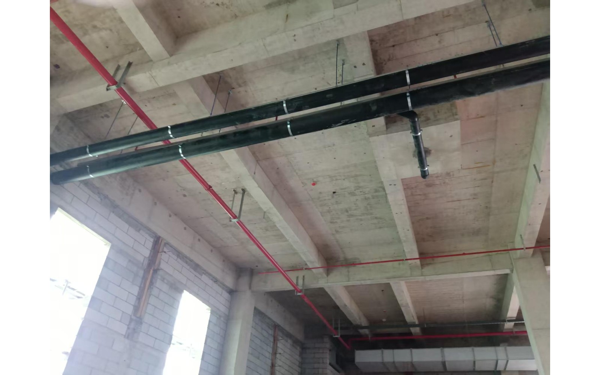
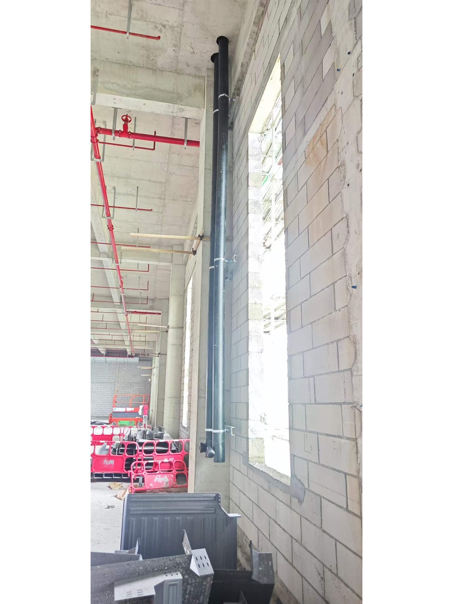

GUWEIENVIRONMENTAL
GUWEIENVIRONMENTALBuilding Water & Drainage
Project Work
Solutions / Buildings, Hotels & Venues
Pipework layouts and on-site installation for building water and drainage systems, coordinated around system, site and construction requirements.
01 / Project Overview
Integrated building water and drainage installation, showing internal and external pipework, risers, support fixings and work at height.


Project Work
Pipe Materials & Diameters
Installation Quantities
The photographs show how horizontal pipes, risers and supports relate to the building structure.
Guwei's supply, installation and commissioning scope for this project: 待确认.
02 / Processes & Systems
Pipework follows the building structure, secured by hangers, supports and clamps, connecting horizontal runs and vertical risers.
Horizontal pipe runs, bends and supports beneath roofs and floor slabs.
Internal and external riser routes along columns, available space and lower pipe connections.
Fixing locations for pipe clamps, hangers and supports on the building structure.
03 / Project Equipment
Equipment and configuration photographs. Select an image to enlarge.



04 / Site Implementation

Elevated work platforms provide access for installing pipework beneath roofs and floor slabs.
Horizontal pipes, risers and supports are arranged around beams, columns and walls. The photographs show their relationship with the building structure.
05 / Supporting Equipment
Coordinate prefabricated septic tanks and drainage pipes around occupancy, discharge destination and underground space.

Select size according to occupancy, effective volume and project design requirements.
Plan installation around inlet/outlet elevations, foundations and access openings.
Review groundwater, ground loads and maintenance space. Final dimensions follow the approved product drawings.
1. The building's purpose and scale, and the water and drainage systems required.
2. The current design or construction stage, available drawings and site conditions.
3. The issue you most want to resolve.
You can start with the information you have, even without complete drawings or technical documents.
Share the project type, capacity and contact details so we can discuss your technical requirements.
Online enquiries are not currently available. Please contact us by phone. 18026396076